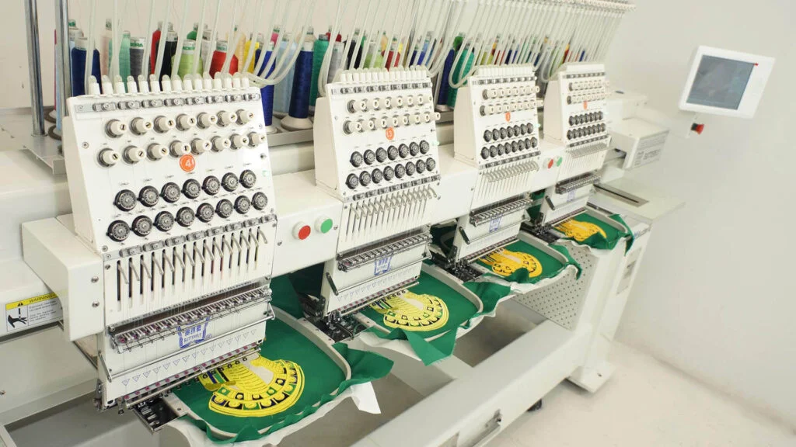

Types of Custom Patches: A Comprehensive Guide
Introduction
Custom patches have grown in popularity over the years, becoming a go-to solution for adding personality, branding, or identity to uniforms, bags, jackets, and more. Whether you’re looking to represent your organization, show off your creative side, or create a cohesive look for a team, custom patches offer a versatile and unique way to make a statement. But with so many types of patches available, how do you choose the right one for your needs? Today patches specializes in creating high-quality custom patches that can help you achieve your goals.

Types of Custom Patches
Embroidered Patches
Definition and Characteristics:
Embroidered patches are made by stitching thread onto a fabric backing. The embroidery process creates a textured and raised design that can add a sophisticated look to the patch. Typically, these patches are made using a combination of thread colors to achieve detailed and intricate designs.
Advantages and Disadvantages:
- Advantages: Embroidered patches are known for their durability and high-quality appearance. They are also versatile and can be applied to a variety of fabrics, including denim, leather, and cotton. The raised texture adds a tactile element to the design.
- Disadvantages: While durable, embroidered patches may not capture very fine details as effectively as other types of patches. They can also be more expensive to produce, especially for complex designs.
Popular Uses and Applications:
Embroidered patches are commonly used for uniforms, corporate branding, sports teams, and military insignia. They are ideal for situations where a classic, professional look is desired.
Woven Patches
Definition and Characteristics:
Woven patches are created by weaving threads together to form the design. This type of patch has a flat surface, as opposed to the raised texture of embroidered patches. Woven patches are known for their fine detail and ability to reproduce complex designs with high precision.
Advantages and Disadvantages:
- Advantages: Woven patches are excellent for detailed and intricate designs, including small text and fine lines. They are generally more cost-effective for large quantities compared to embroidered patches.
- Disadvantages: Woven patches lack the texture and dimensionality of embroidered patches, which might be a downside if you prefer a more tactile element.
Popular Uses and Applications:
These patches are often used for fashion labels, name tags, and products that require fine detailing. They are suitable for applications where precision and clarity of design are crucial.
PVC Patches
Definition and Characteristics:
PVC (Polyvinyl Chloride) patches are made from a flexible, rubber-like material that can be molded into various shapes and sizes. The design is created using a 3D molding process, which allows for intricate and vibrant designs with a high level of detail.
Advantages and Disadvantages:
- Advantages: PVC patches are highly durable, water-resistant, and suitable for outdoor use. They are also versatile in terms of shape and color, and their 3D effect adds a modern touch.
- Disadvantages: PVC patches can be less breathable than fabric patches and may not be as comfortable on clothing. They can also be more expensive than some other types.
Popular Uses and Applications:
PVC patches are commonly used for outdoor gear, tactical vests, and promotional items. They are ideal for situations where durability and a 3D effect are desired.
Printed Patches
Definition and Characteristics:
Printed patches are created using digital printing technology to transfer an image or design directly onto a fabric backing. This type of patch allows for high-resolution designs and a wide range of colors.
Advantages and Disadvantages:
- Advantages: Printed patches can reproduce complex and colorful designs with ease. They are often more affordable for small quantities and can include photographic-quality images.
- Disadvantages: The durability of printed patches may be less compared to embroidered or PVC patches, as the print can fade or peel over time. They are generally best suited for short-term use.
Popular Uses and Applications:
These patches are popular for promotional events, temporary branding, and fashion items where high-detail designs and vibrant colors are needed.
Leather Patches
Definition and Characteristics:
Leather patches are made from genuine or synthetic leather and can be embossed, debossed, or printed with designs. Leather offers a unique and rugged appearance, adding a premium feel to the patch.
Advantages and Disadvantages:
- Advantages: Leather patches are durable and have a distinctive texture that can enhance the aesthetic of garments and accessories. They also age well, often developing a patina over time.
- Disadvantages: Leather patches can be more expensive and may require special care to maintain their appearance. They may also not be suitable for all fabrics.
Popular Uses and Applications:
Leather patches are often used on high-end fashion items, luxury brands, and outdoor gear. They are ideal for adding a touch of elegance and durability to your items.